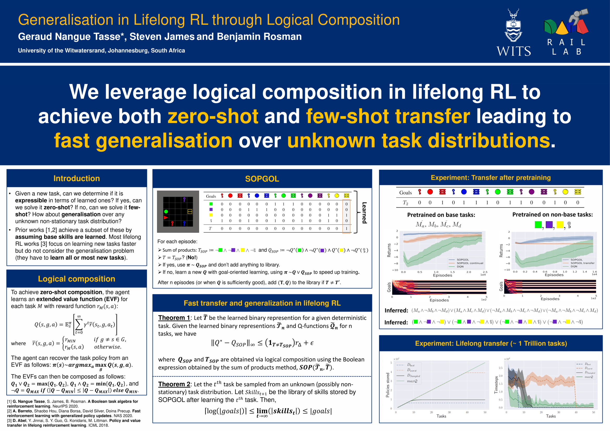
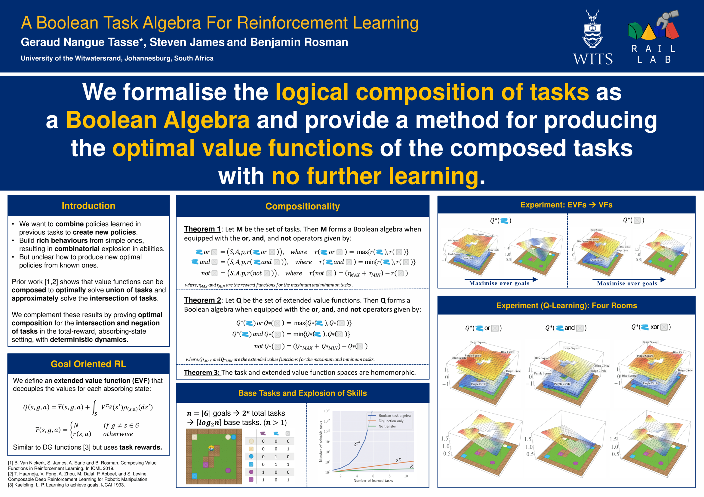
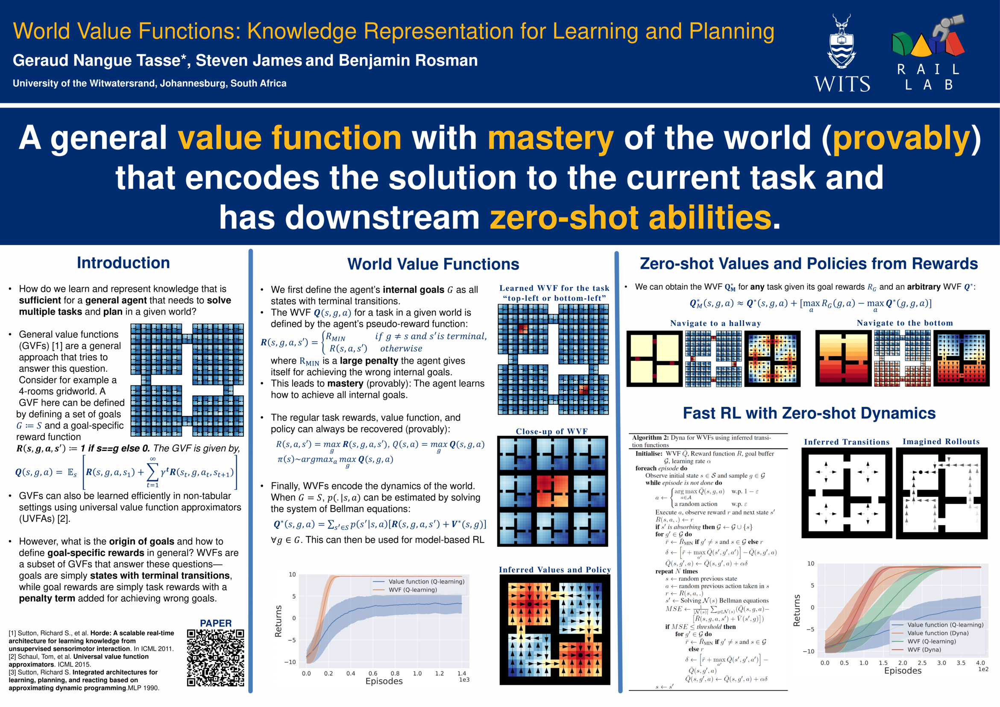
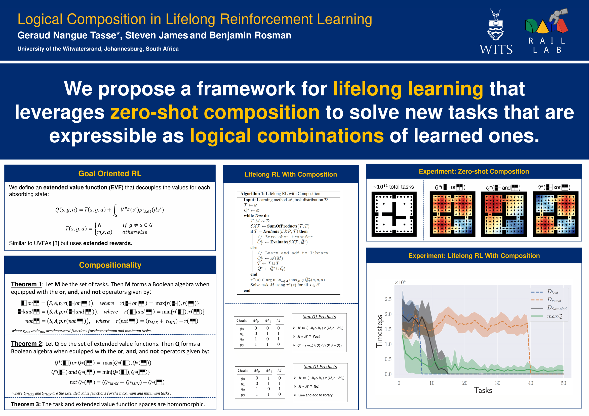
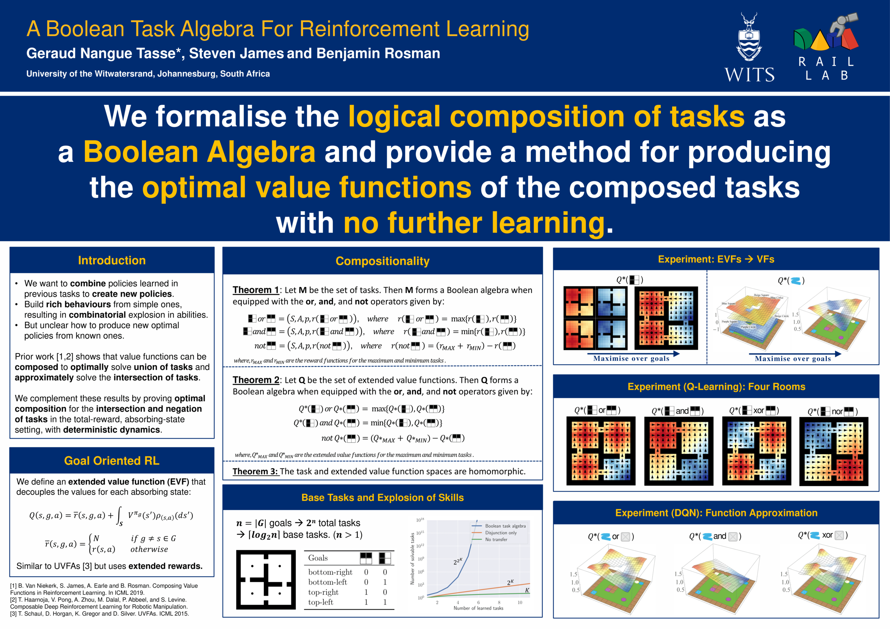

Geraud
Nangue Tasse
Theses
Geraud Nangue Tasse. Advised by Steven James and Prof Benjamin Rosman.
Ph.D. Thesis (Computer Science), University of the Witwatersrand, 2024.
@phdthesis{tasse2024phd,
title={Towards Lifelong Reinforcement Learning Through Temporal Logics and Zero-Shot Composition},
author={Nangue Tasse, Geraud},
type = {Doctoral Dissertation},
school={University of the Witwatersrand, Johannesburg (South Africa)
year={2024}
}
Geraud Nangue Tasse. Advised by Steven James and Prof Benjamin Rosman.
M.Sc Thesis (Computer Science), University of the Witwatersrand, 2020.
@mastersthesis{tasse2020msc,
title={A task algebra for agents in reinforcement learning},
author={Nangue Tasse, Geraud},
type = {Masters Dissertation},
year={2020},
school={University of the Witwatersrand, Johannesburg (South Africa)}
}
Journal Papers
Ndivhuwo Makondo*, Paul Amayo, Jenalea Rajab, Lifhasi Ramulondi, Steven James, Alexandra Barry, Adam Mukuddem, Thabisa Maweni, Tamlin Love, Geraud Nangue Tasse, Zimkhitha Sijovu, Belinda Matebese, Benjamin Rosman.
IEEE Robotics & Automation Magazine, 2025.
@article{makondo2025strengthening,
title={Strengthening Robotics and Automation in Africa: Highlights of ICRA@ 40--Africa [Education]},
author={Makondo, Ndivhuwo and Amayo, Paul and Rajab, Jenalea and Ramulondi, Lifhasi and James, Steven and Barry, Alexandra and Mukuddem, Adam and Maweni, Thabisa and Love, Tamlin and Tasse, Geraud Nangue and others},
journal={IEEE Robotics \& Automation Magazine},
volume={32},
number={2},
pages={202--216},
year={2025},
publisher={IEEE}
}
Geraud Nangue Tasse*, Steven James, Benjamin Rosman.
JAIR 2025, presented @ RLC 2025.
@article{tasse2025lattice,
title={Composition and Zero-Shot Transfer with Lattice Structures in Reinforcement Learning},
author={Nangue Tasse, Geraud and James, Steven and Rosman, Benjamin},
journal={Journal of Artificial Intelligence Research},
volume={82},
pages={2325--2388},
year={2025}
}
Vanya Cohen*, Geraud Nangue Tasse*, Nakul Gopalan, Steven James, Matthew Gombolay, Ray Mooney, Benjamin Rosman.
TMLR 2024, presented @ RLC 2025.

@article{cohen2025compositional,
title={Compositional Instruction Following with Language Models and Reinforcement Learning},
author={Cohen, Vanya and Nangue Tasse, Geraud and Gopalan, Nakul and James, Steven and Gombolay, Matthew and Mooney, Ray and Rosman, Benjamin},
journal={Transactions on Machine Learning Research},
issn={2835-8856},
year={2024},
}
Conference Papers
Geraud Nangue Tasse*, D. Jarvis, Steven James, Benjamin Rosman.
ICLR 2024.

@inproceedings{tasse2024skill,
title={Skill Machines: Temporal Logic Skill Composition in Reinforcement Learning},
author={Nangue Tasse, Geraud and Jarvis, Devon and James, Steven and Rosman, Benjamin},
booktitle={International Conference on Learning Representations},
year={2024}
}
Geraud Nangue Tasse*, Steven James, Benjamin Rosman.
ICLR 2022.

@inproceedings{tasse2022generalisation,
title={Generalisation in Lifelong Reinforcement Learning through Logical Composition},
author={Nangue Tasse, Geraud and James, Steven and Rosman, Benjamin},
booktitle={International Conference on Learning Representations},
year={2022}
}
Geraud Nangue Tasse*, Steven James, Benjamin Rosman.
NeurIPS 2020.

@inproceedings{tasse2020boolean,
title = {A Boolean Task Algebra for Reinforcement Learning},
author = {Nangue Tasse, Geraud and James, Steven and Rosman, Benjamin},
booktitle = {Advances in Neural Information Processing Systems},
editor = {H. Larochelle and M. Ranzato and R. Hadsell and M.F. Balcan and H. Lin},
pages = {9497--9507},
publisher = {Curran Associates, Inc.},
url = {https://proceedings.neurips.cc/paper_files/paper/2020/file/6ba3af5d7b2790e73f0de32e5c8c1798-Paper.pdf},
volume = {33},
year = {2020}
}
Workshops, Symposia, Extended Abstracts, and Preprints
2025
Geraud Nangue Tasse*, Matthew Riemer, Benjamin Rosman, Tim Klinger.
Finding the Frame Workshop at RLC, 2025.

@inproceedings{tasse2025finding,
title={Finding the FrameStack: Learning What to Remember for Non-Markovian Reinforcement Learning},
author={Tasse, Geraud Nangue and Riemer, Matthew and Rosman, Benjamin and Klinger, Tim},
booktitle={Finding the Frame Workshop at RLC 2025}
year={2025},
}
Amir Esterhuysen*, Geraud Nangue Tasse, Steven James, Benjamin Rosman, Jonathan Shock.
Reinforcement Learning and Decision Making Conference (RLDM), 2025.
@inproceedings{amir2025neat,
title={Using NEAT to Learn Operators for Flexible Boolean Composition within Reinforcement Learning},
author={Esterhuysen, Amir and James, Steven and Nangue Tasse, Geraud and Rosman, Benjamin and Shock, Jonathan},
booktitle={Multi-disciplinary Conference on Reinforcement Learning and Decision Making (RLDM)}
year={2025},
}
Sergio A. Frasco*, Clémentine Dominé, Devon Jarvis, Geraud Nangue Tasse.
Reinforcement Learning and Decision Making Conference (RLDM), 2025.
@inproceedings{sergio2025learning,
title={Learning Grid Cells with World Value Functions},
author={Frasco, Sergio A. and Dominé, Clémentine and Jarvis, Devon and Nangue Tasse, Geraud},
booktitle={Multi-disciplinary Conference on Reinforcement Learning and Decision Making (RLDM)}
year={2025},
}
2024
Geraud Nangue Tasse*, Tamlin Love, Mark Nemecek, Steven James, Benjamin Rosman.
Reinforcement Learning Safety Workshop (RLSW) @ RLC, 2024.

@article{
tasse2024rosarl,
title={{ROSARL}: Reward-Only Safe Reinforcement Learning},
author={Nangue Tasse, Geraud and Love, Tamlin and Nemecek, Mark and James, Steven and Rosman, Benjamin},
journal={First Reinforcement Learning Safety Workshop at RLC},
year={2024},
}
Simon Rosen*, Abdel Mfougouon Njupoun, Geraud Nangue Tasse, Steven James, Benjamin Rosman.
Reinforcement Learning Safety Workshop (CoCoMARL) @ RLC, 2024.
@article{
simon2024optimal,
title={Optimal Task Generalisation in Cooperative Multi-Agent Reinforcement Learning},
author={Rosen, Simon and Njupoun, Abdel Mfougouon and Nangue Tasse, Geraud and James, Steven and Rosman, Benjamin},
journal={Coordination and Cooperation in Multi-Agent Reinforcement Learning at RLC},
year={2024},
}
Tristan Bester*, Geraud Nangue Tasse, Steven James, Benjamin Rosman.
Neuro-Symbolic Learning and Reasoning (NuCLeaR) @ AAAI, 2024.
@article{bester2024counting,
title={Counting Reward Automata: Sample Efficient Reinforcement Learning Through
the Exploitation of Reward Function Structure},
author={Bester, Tristan and Nangue Tasse, Geraud and James, Steven and Rosman, Benjamin},
journal={Worshop on Neuro-Symbolic Learning and Reasoning in the era of Large Language Models at AAAI},
year={2024}
}
Michael Beukman*, Branden Ingram, Geraud Nangue Tasse, Benjamin Rosman, Pravesh Ranchod.
Preprint, 2024.
@article{beukman2024robocup,
title={RobocupGym: A challenging continuous control benchmark in Robocup},
author={Beukman, Michael and Ingram, Branden and Nangue Tasse, Geraud and Rosman, Benjamin and Ranchod, Pravesh},
journal={arxiv.org},
year={2024}
}
2022
Tamlin Love*, Devon jarvis, Geraud Nangue Tasse, Branden Ingram, Steven James, Benjamin Rosman.
Lifelong Learning of High-level Cognitive and Reasoning Skills Workshop @ IROS, 2022.
@article{love2022facilitating,
title={Facilitating Safe Sim-to-Real through Simulator Abstraction and Zero-shot Task Composition},
author={Love, Tamlin and Jarvis, Devon and Tasse, Geraud Nangue and Ingram, Branden and James, Steven and Rosman, Benjamin},
journal={Lifelong Learning of High-level Cognitive and Reasoning Skills Workshop at IROS},
year={2022}
}
Junkyu Lee*, Michael Katz, Don Joven Agravante, Miao Liu, Geraud Nangue Tasse, Tim Klinger, Shirin Sohrabi.
Planning and Reinforcement Learning Workshop (PRL) @ ICAPS, 2022.
@article{lee2022hierarchical,
title={Hierarchical Reinforcement Learning with AI Planning Models},
author={Lee, Junkyu and Katz, Michael and Agravante, Don Joven and Liu, Miao and Tasse, Geraud Nangue and Klinger, Tim and Sohrabi, Shirin},
journal={Bridging the Gap Between AI Planning and Reinforcement Learning Workshop at ICAPS},
year={2022}
}
Geraud Nangue Tasse*, Steven James, Benjamin Rosman.
Planning and Reinforcement Learning Workshop (PRL) @ ICAPS, 2022.

@article{tasse2022wvfprl,
title={World value functions: Knowledge representation for learning and planning},
author={Nangue Tasse, Geraud and Rosman, Benjamin and James, Steven},
journal={Bridging the Gap Between AI Planning and Reinforcement Learning Workshop at ICAPS},
year={2022}
}
Geraud Nangue Tasse*, Steven James, Benjamin Rosman.
Reinforcement Learning and Decision Making Conference (RLDM), 2022.

@article{tasse2022wvfrldm,
title={World Value Functions: Knowledge Representation for Multitask Reinforcement Learning},
author={Nangue Tasse, Geraud and Rosman, Benjamin and James, Steven},
journal={Multi-disciplinary Conference on Reinforcement Learning and Decision Making (RLDM)},
year={2022}
}
Vanya Cohen*, Geraud Nangue Tasse*, Nakul Gopalan, Steven James, Matthew Gombolay, Benjamin Rosman.
Workshop on Language and Robotics at CoRL, 2022.
@inproceedings{cohen2022end,
title={End-to-end learning to follow language instructions with compositional policies},
author={Cohen, Vanya and Tasse, Geraud Nangue and Gopalan, Nakul and James, Steven and Mooney, Ray and Rosman, Benjamin},
booktitle={Workshop on Language and Robotics at CoRL 2022},
year={2022}
}
2021
Vanya Cohen*, Geraud Nangue Tasse*, Nakul Gopalan, Steven James, Matthew Gombolay, Benjamin Rosman.
AAAI Fall Symposium on AI for HRI, 2021.
@article{cohen2021learning,
title={Learning to follow language instructions with compositional policies},
author={Cohen, Vanya and Tasse, Geraud Nangue and Gopalan, Nakul and James, Steven and Gombolay, Matthew and Rosman, Benjamin},
journal={AAAI Fall Symposium on AI for HRI},
year={2021}
}
2020
Geraud Nangue Tasse*, Steven James, Benjamin Rosman.
4th Lifelong Learning Workshop at ICML, 2020.

@inproceedings{tasse2020logical,
title={Logical Composition in Lifelong Reinforcement Learning},
author={Tasse, Geraud Nangue and James, Steven and Rosman, Benjamin},
booktitle={4th Lifelong Machine Learning Workshop at ICML},
year={2020}
}
Geraud Nangue Tasse*, Steven James, Benjamin Rosman.
Beyond “Tabula Rasa” in Reinforcement Learning (BeTR-RL): Agents that remember, adapt, and generalize (Workshop at ICLR), 2020.

@inproceedings{tasse2020boolean,
title={A Boolean Task Algebra for Reinforcement Learning},
author={Tasse, Geraud Nangue and James, Steven and Rosman, Benjamin},
booktitle={Beyond “Tabula Rasa” in Reinforcement Learning (BeTR-RL): Agents that remember, adapt, and generalize Workshop at ICLR},
year={2020}
}
2019
Geraud Nangue Tasse*, James Connan.
Black in AI workshop at NeurIPS, 2019.

@inproceedings{tasse2019hypersearch,
title={Hypersearch: A Parallel Training Approach For Improving Neural Networks Performance},
author={Tasse, Geraud Nangue and Connan, James},
booktitle={Black in AI workshop at NeurIPS},
year={2019}
}